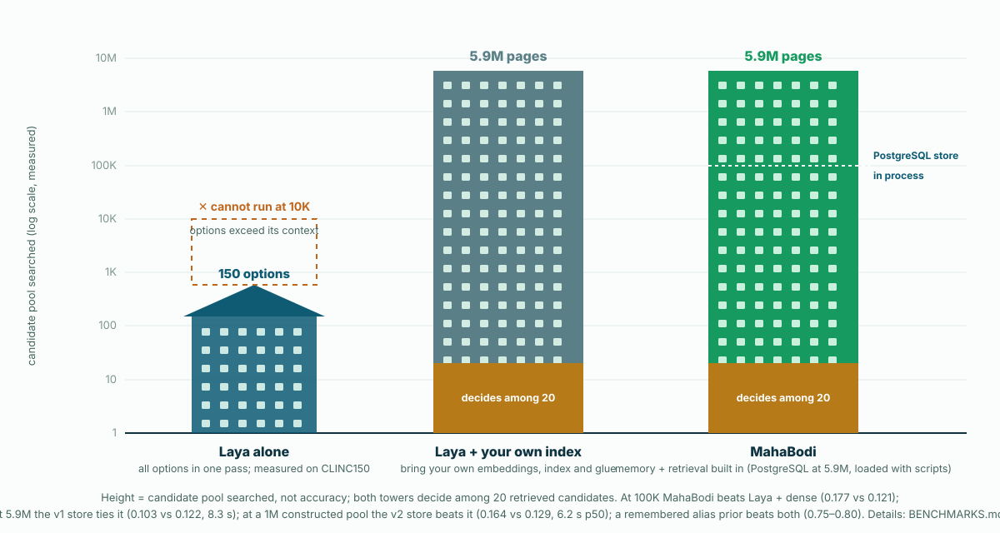
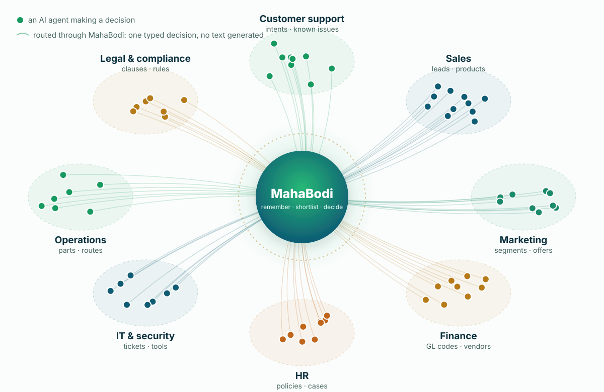

Which intent, product, entity or tool, out of thousands or millions? Does this ticket match a known issue? Does the policy say yes? With a handful of options, prompt an LLM. With too many to list, MahaBodi keeps them in memory, retrieves a shortlist, and decides in one forward pass with Laya's typed decision models, grounded in your documents and labelled past decisions, in one Rust engine (tested at 5.9M pages — a tie with Laya + dense — and at a 1M constructed pool — a win; a simple remembered prior beats both; see When to use it).
Accuracy numbers compare both systems on the same machine and items with an exact McNemar test; the later comparisons (learning, fine-tuning, entity linking) were pre-registered. The full tables, losses included, are below.

Where MahaBodi fits best, and where something else does.
Laya can't read 10,000 options at once. MahaBodi's retrieval beat a dense shortlist at 100K pages (0.177 vs 0.121), and it ran 5.9M pages through PostgreSQL on one Mac mini, tying Laya + dense there (numerically lower; 8.3 s per decision). The rebuilt v2 store (per-passage vectors) was then tested at a 1M-page constructed pool — golds, hard negatives mined against the baseline's own retriever, random fill — and beat Laya + an exact dense shortlist, 0.164 vs 0.129 (p = 0.023), consistent with retrieval (no decider-only arm at 1M). The alias prior still beats both (0.749). What the memory stores matters most: on AIDA, a simple remembered alias prior beat every system, MahaBodi included (0.78 vs 0.18 at 100K).
It learns from labelled cases in seconds on a CPU and is never below Laya as shipped on 5 fresh suites (3 beats, 2 ties). A plain kNN is a strong alternative: at default settings it beats MahaBodi on Banking77 (0.892 vs 0.832; on another fresh sample, the opt-in calibrate=200 ties kNN at 0.882 vs 0.876).
A fully fine-tuned Laya beats MahaBodi on 4 of 6 suites. MahaBodi's advantage there is no training step, and updates take seconds when labels change.
Agents across the business send typed requests. MahaBodi remembers, shortlists and decides in one pass, then sends a typed answer back, and it learns from labelled outcomes without retraining. Illustrative uses; measured results are below.


Each part of the tree is a component you can test on its own, and every result below traces back to one of them.
Documents become a topology of actions, data and concepts. A density check keeps every record reachable, and hybrid keyword-plus-meaning search finds it again, even through typos.
One Rust core: a query cascade with handoff flags, tournament shortlisting for many options, experience memory, and a script guard.
The same engine and the same JSON API from Rust, Python, Node.js, Java, C#/.NET and Go, all tested against the real model.
Typed choice, score and yes/no answers with calibrated probabilities, in one forward pass. Nothing is generated, so nothing needs parsing.
Same machine, same Laya checkpoint on both sides, seeded test samples, and an exact McNemar test on the same items. A result counts as a win only at p < 0.05.
| Result | Laya / baseline | MahaBodi | Verdict |
|---|---|---|---|
| MASSIVE intent, 51 languages, zero-shot | 0.366 · 45/51 | 0.405 · 47/51 | beat |
| CLINC150 re-test on fresh items, same out-of-scope gate for every system | 0.756 (Laya + MiniLM shortlist + gate) | 0.786 | beat (p = 0.014; the gate lifts out-of-scope recall to 68–72 % for all systems) |
| Entity linking, 100K candidate Wikipedia pages (AIDA, 1,000 mentions; pre-registered) | 0.121 (Laya + dense shortlist) · Laya alone cannot run | 0.177 | beat (p = 0.0002; a retrieval gain: the deciders tie on the same shortlist) |
| Entity linking, natural 5.9M pages (v1 store: one vector per page, ts_rank) | 0.122 (Laya + dense shortlist) | 0.103 | tie (p = 0.14, numerically lower; 8.3 s per decision on a Mac mini) |
| Entity linking, 1M-page constructed pool (v2 store: per-passage vectors, cascade) | 0.129 (Laya + exact dense shortlist) | 0.164 | beat (p = 0.023; prior-dominated stage: the alias prior gets 0.749) |
| Entity linking, 10K candidate pages | 0.387 (Laya + dense shortlist) | 0.384 | tie (p = 0.92) |
| Entity linking vs a context-free alias prior (the entity a name usually means), 10K / 100K / 5.9M / 1M | prior: 0.800 / 0.784 / 0.772 / 0.749 | 0.384 / 0.177 / 0.103 / 0.164 (v2 store at 1M) | loss (the prior beats every context-reading system at every size) |
| Against Laya fully fine-tuned on the same 2,000 examples (encoder + head) | Emotion 0.916 · SST-5 0.558 · prompt-inj. 0.974 · Banking77 0.852 | 0.648 · 0.426 · 0.767 · 0.806 | loss on 4 of 6 · tie AG News, BoolQ · Banking77 ties with calibrate=200 |
| Against Laya with its head fine-tuned on the same 2,000 examples (fresh items) | Emotion 0.598 · Banking77 0.598 · SST-5 0.530 | 0.648 · 0.806 · 0.426 | beat on Emotion, Banking77 · tie AG News · loss on SST-5 |
| CLINC150, 150 intents + out-of-scope, zero-shot | 0.708 (Laya + MiniLM shortlist) · Laya alone 0.538 | 0.736 | beat (p = 0.027, one run; in-scope only: out-of-scope recall 3 %) |
| Banking77, 77 intents, zero-shot | 0.492 | 0.660 | beat (ties Laya + MiniLM shortlist) |
| Banking77 with 2,000 labelled examples (default settings, fresh items) | 0.462 (zero-shot) | 0.832 | beat (but a plain kNN on the same labels: 0.892, a loss) |
Same, with opt-in calibrate=200 (third fresh sample) | 0.446 · plain kNN 0.876 | 0.882 | beat Laya · ties kNN (p = 0.63); never below Laya or kNN on 5 suites |
| Latency, p50, CPU only (one Ubuntu i9-9900X, 8 threads, batch 1) | Laya PyTorch: 165 ms (4 options) · 379 ms (77) | 125 ms · 730 ms | faster on 4 (mostly ONNX Runtime) · 1.9× slower on 77 (tournament) |
| Calibration (ECE after the same temperature refit), 6 suites | Banking77 0.159 | Banking77 0.050 | beat on Banking77 only (tournament); tie on 5 |
| Experience memory, default settings, 5 suites, fresh items | Laya zero-shot | no suite below Laya | 3 beats, 2 ties |
| Laya's near-ties (top-2 within 0.10), Banking77 | 26 % correct | 91 % with labelled memory | beat |
| BoolQ answered from memory | 0.424 question only · 0.626 always-yes | 0.782 | beat (oracle passage: 0.846) |
| Misspelled keyword search (SQuAD, 300 paragraphs) | BM25: 0.05 recall@5 | 0.61 | beat |
| Six other Laya suites (AG News, Emotion, SST-5, …) | = | = | tie: exact parity |
| Keyword search at 2,000 paragraphs | BM25: 0.684 | 0.660 | loss |
Scorecard against Laya's 10 published benchmarks, zero-shot: 2 beats, 6 ties; all 10 are now measured. Calibration is scored per suite: better on Banking77 only, identical on the other 5. Latency is faster on 4 options (mostly from ONNX Runtime) and slower on 77 (the tournament). Neither counts as a beat. MahaBodi runs Laya's own models: the wins come from how it uses them, not from a new model. Full tables and per-item predictions →
Where MahaBodi stands today, with ties and losses reported next to wins.
decide() reproduces the benchmark exactly (all 1,600 items on Ubuntu with the final build).calibrate step closes that gap to a tie by switching to kNN.Deploy memory on PostgreSQL + Apache AGE with models on your own GPUs, or start coding in six languages today.